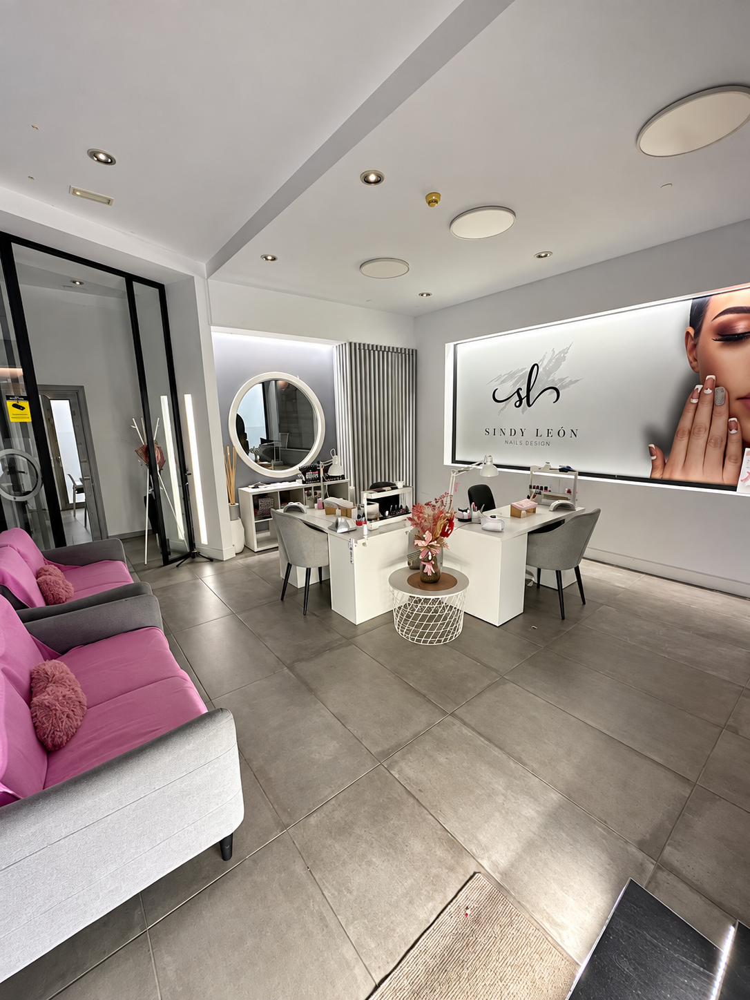
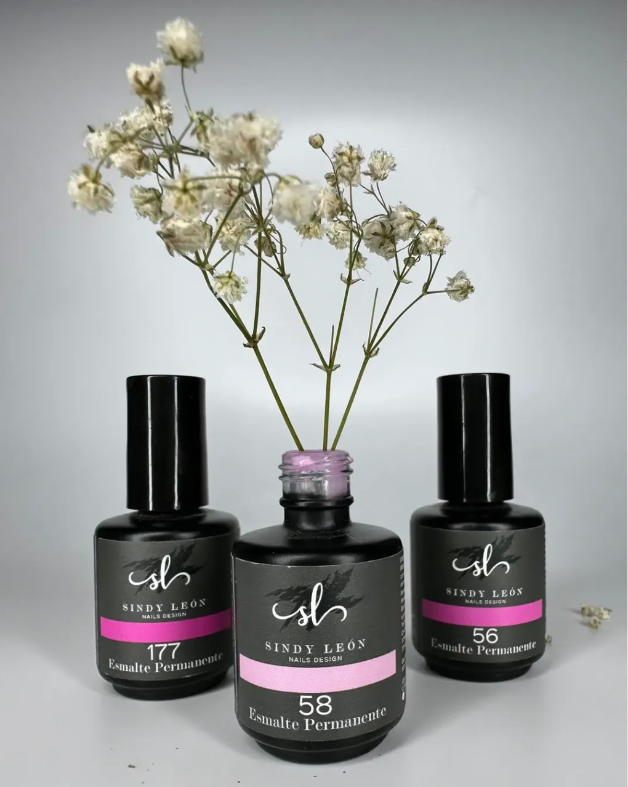
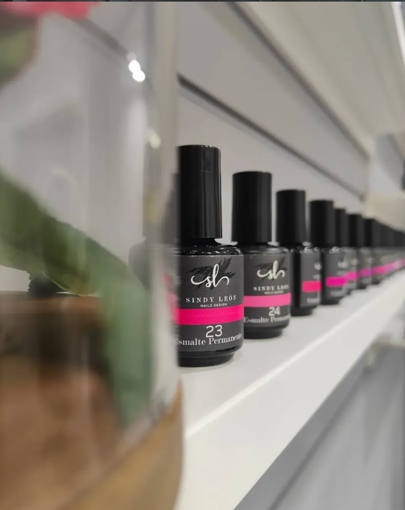

El estudio
Un equipo, un mismo cuidado por el detalle
Sindy León lidera un equipo de profesionales en Vecindario. Las reseñas verificadas en Booksy destacan, una y otra vez, el trato delicado y la atención al detalle en cada cita.
El equipo
Cuatro profesionales, un mismo estudio
Nombres y valoraciones tal y como aparecen en las reseñas verificadas de clientas en Booksy — no incluimos apellidos, años de experiencia ni certificaciones porque no están publicados en ninguna fuente consultada.
Sindy León
Propietaria"Gracias Sindy 🙌" — a lo que ella respondió: "Eres un amor ❤️" Reseña verificada en Booksy, servicio Relleno + cambio de forma
Astrid
Uñas & diseño"El trato y la profesionalidad de la chica que me atiende siempre, Astrid, es maravillosa." Reseña verificada en Booksy, servicio Semipermanente con refuerzo
Sheila
Uñas & diseño"Es una gran profesional. Trató mis uñas con delicadeza y cuidado." Reseña verificada en Booksy, servicio Uñas acrílicas cortas o medias
Milena
Uñas & diseño"Me ha encantado como siempre. Es muy tranquila y detallista." Reseña verificada en Booksy, servicio Método Kapping
En el día a día
Así queda cada cita
Una pequeña muestra adicional de nuestro portfolio, con distintas manos y estilos.


Lo que encontrarás
Valoración y comodidades del local
★ 4,8 / 5
631 reseñas verificadas en Booksy, 588 de ellas con la puntuación máxima. En Google figura como 4,3/5 sobre 119 opiniones (no verificadas por Google).
Pago
Se aceptan tarjetas de crédito.
Accesibilidad
Acceso para personas con movilidad reducida.
En el salón
Se permiten mascotas · Wi-Fi · Programa de fidelidad.
Higiene
Desinfección de superficies y estaciones entre cada cita, ventilación adecuada.
Ubicación
Calle Primero de Mayo, 129, local 5 — Vecindario, Santa Lucía de Tirajana. Ubicado dentro del Hotel Avenida de Canarias.
Nuestra línea propia
Esmaltes Sindy León Nails Design
Además de los servicios en el salón, tenemos nuestra propia línea de esmaltes permanentes, disponible en el estudio.


Antes de tu cita
5 maneras de ayudar a tu manicurista
Consejos publicados en nuestro Instagram para que tu cita salga perfecta.
-
1
Llegá en hora
Realizar un servicio de calidad lleva tiempo y compromiso. Antes de reservar tu cita, asegúrate de disponer del tiempo necesario acorde al servicio que quieres realizar.
-
2
Elige de antemano
Las posibilidades son infinitas. Nos ayuda mucho si ya vienes con una idea de lo que quieres —y más si nos la envías de antemano— para no perder tiempo de servicio con la elección.
-
3
El celu en el bolso
Evita el uso del móvil durante tu servicio: vas a poder estar más atenta y terminar más rápido y sin errores.
-
4
Prestá atención
Fíjate bien al momento de colocar la mano en la cabina para evitar choques. ¡No te olvides del pulgar! Para que también se seque perfecto.
-
5
Relax
Es importante que te sientas cómoda; si hay algo que no te hace sentir bien, comunícalo. Mantén siempre las manos relajadas y evita el movimiento repetitivo con el pie, para que no se muevan tus manos o la mesa.
Publicado originalmente en @sindyleonnailsdesign, 25 de marzo de 2025.
Síguenos
Más contenido en Instagram
Publicaciones reales de @sindyleonnailsdesign — tócalas para verlas en Instagram.